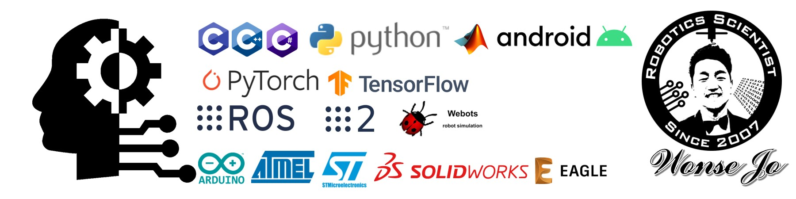

Wonse Jo
Dr. Wonse Jo, Postdoctoral Researcher, MAVRIC Lab, University of Michigan, Ann Arbor, MI USA.
Make the Impossible Possible with Technology


Postdoctoral Researcher
Affective Robotics
University of Michigan
Ann Arbor, MI USA
Welcome, I am Wonse Jo and a Postdoctoral Researcher at the Robotics Department, University of Michigan. My research interest includes Human-Robot Interaction (HRI), Affective computing/robotics, AI robotics, Environmental robotics, and Multi-robot system (MRS).
As well, I have broder scientific skills and knowledges from mechanics, electronics, and computer science to the human factors, so I strongly believe that I can make everything for any project or researches using my research experiences and skills.
If you want to get more information about me, please check my CV (PDF) or visit my project page in this website (Link) or contact me via email (wonse@umich.edu).
news
| Mar 1, 2023 | I have started a new job position at University of Michigan, as a postdoctoral researcher. |
|---|---|
| Jan 30, 2022 | |
| Aug 1, 2021 | |